Teyvat
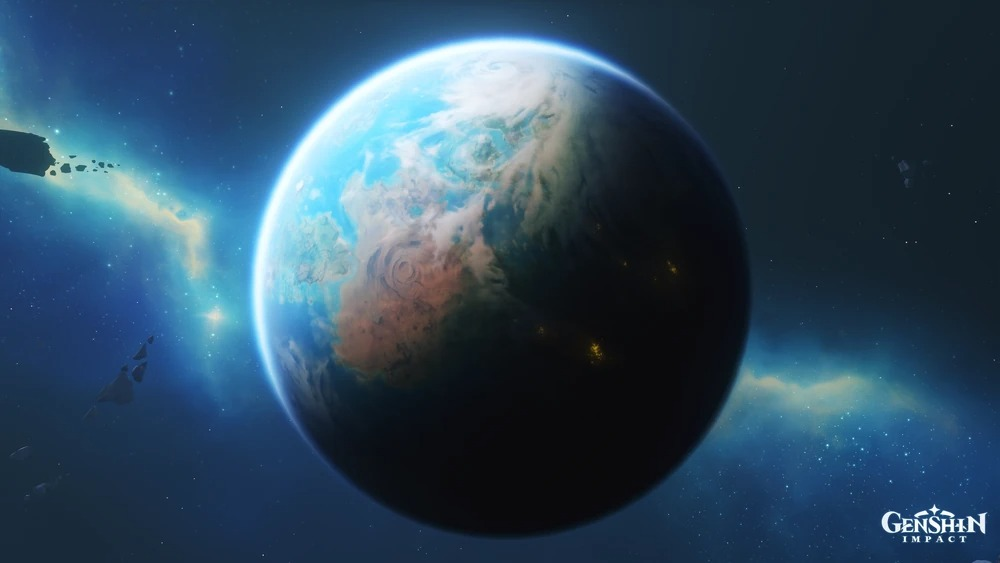
Teyvat é um mundo e continente em Genshin Impact. Ele está localizado na borda de um braço espiral de uma galáxia sem nome no mar de estrelas. Ele tem um grande satélite, chamado Lua de Gelo, bem como dois antigos satélites: a Lua Eterna e a Lua Iridescente.
"Você chegou a Teyvat — um mundo fantástico onde os sete elementos fluem e convergem.
Em um passado distante, os Arcontes concederam aos mortais habilidades elementais únicas. Com a ajuda desses poderes, as pessoas formaram uma pátria próspera a partir da natureza selvagem. Contudo, há 500 anos, o colapso de uma civilização antiga virou o universo de cabeça para baixo...
Embora a calamidade que o mundo sofreu tenha cessado, a paz ainda não foi restaurada.
Mondstadt
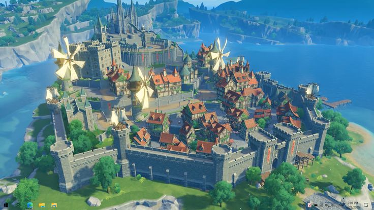
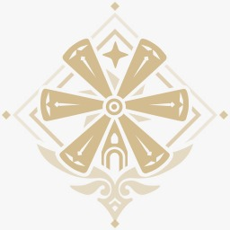
Mondstadt é uma das sete nações de Teyvat e uma das principais regiões de Genshin Impact. É a primeira nação onde o Viajante começa a procurar por seu irmão ou irmã perdido(a). É a nação que venera Barbatos, o Arconte Anemo e Deus da Liberdade.
Elemento Associado:Anemo Missão do Arconte:Prólogo Ideal:Liberdade Arconte:Barbatos(Venti)
Liyue
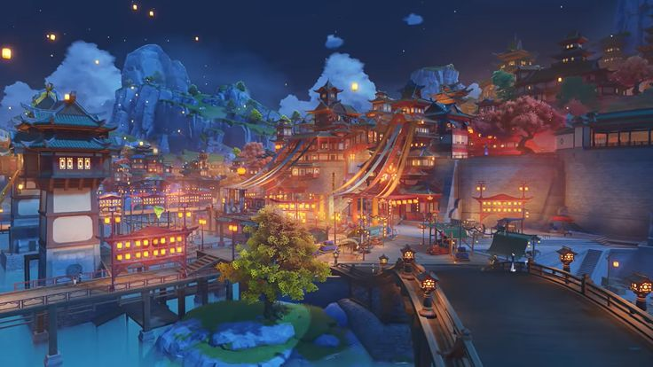
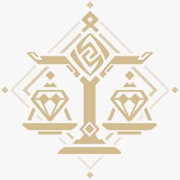
Liyue ( chinês :璃月 Líyuè ) é uma das sete nações de Teyvat e uma das principais regiões de Genshin Impact. É a nação que venera Rex Lapis, o Arconte Geo e Deus dos Contratos.
Elemento Associado:Geo Missão do Arconte:Capítulo I Ideal:Contratos Arconte:Morax(Zhongli)
Inazuma
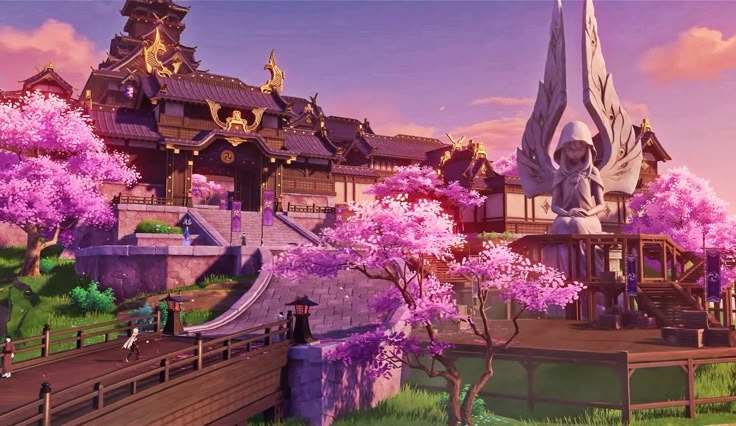
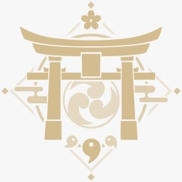
Inazuma ( em japonês :稲妻 Inazuma ) é uma das sete nações de Teyvat e uma das principais regiões de Genshin Impact. É uma região arquipelágica que venera Raiden Shogun, o Arconte Elétrico e Deus da Eternidade — que também é o líder de seu órgão governante, o Xogunato Inazuma . Inazuma está localizada a aproximadamente 4 km a sudeste do Porto de Liyue e faz fronteira com o Mar Negro.
Elemento Associado:Electro Missão do Arconte:Capítulo II Ideal:Eternidade Arconte:Beelzebul(Raiden Shogun)
Sumeru
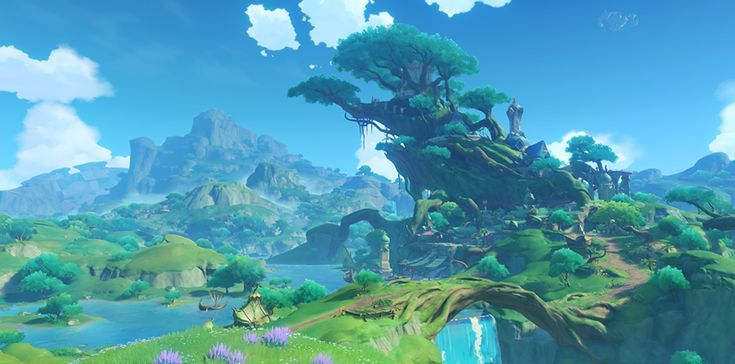
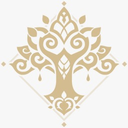
Sumeru é uma das sete nações de Teyvat e uma das principais regiões de Genshin Impact. É a nação que venera o Lorde Menor Kusanali, o Arconte Dendro e Deus da Sabedoria. É conhecida como o centro de aprendizado de Teyvat por abrigar a Academia Sumeru.
Elemento Associado:Dendro Missão do Arconte:Capítulo III Ideal:Sabedoria Arconte:Buer(Nahida)
Fontaine
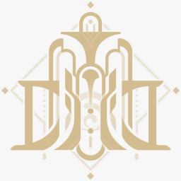
Fontaine é uma das sete nações de Teyvat e uma das principais regiões de Genshin Impact. É a nação que venerava Focalors, o Arconte Hidro e Deus da Justiça.
Elemento Associado:Hydro Missão do Arconte:Capítulo IV Ideal:Justiça Arconte:Nenhum, pois o trono divino atualmente foi destruído (Pórem antigamente era Focalors(Furina)).
Natlan
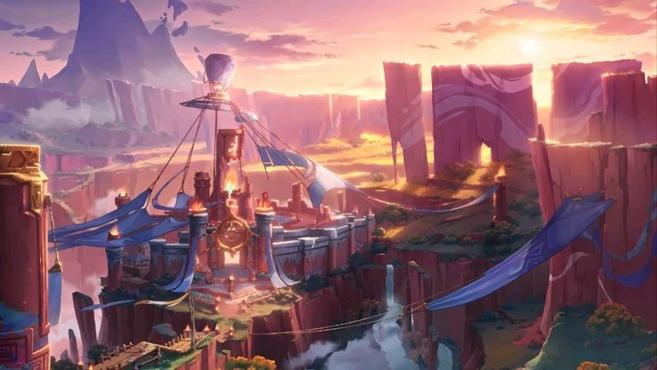
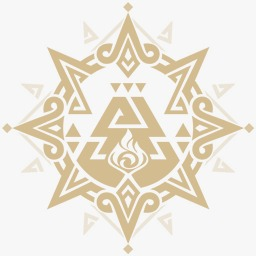
Natlan é uma das sete nações de Teyvat e uma das principais regiões de Genshin Impact. É a nação liderada por Mavuika, o Arconte Pyro e Deus da Guerra.
Elemento Associado:Pyro Missão do Arconte:Capítulo V Ideal:Guerra Arconte:Haborym(Mavuika)
Nod-Krai
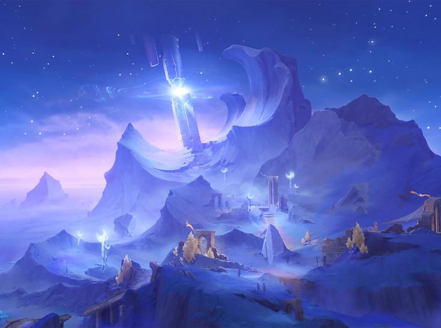
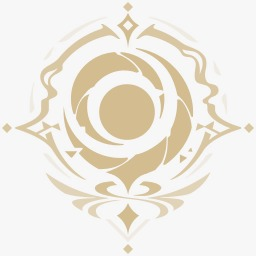
Nod-Krai, também conhecida como as terras fronteiriças e anteriormente como Nephilheim, é uma região autônoma localizada na borda de Teyvat, na parte mais ao sul de Snezhnaya, e uma das principais regiões de Genshin Impact. Pessoas de toda Teyvat se congregam em Nod-Krai, levando a região a ganhar a reputação de ser um "Paraíso". Nod-Krai tem uma profunda conexão com as Três Luas que outrora existiram acima de Teyvat, e os Descendentes da Lua Gelada, o povo indígena de Nod-Krai, veneram a Deusa da Lua Kuutar, também conhecida como a antiga Arauta Fatui Columbina.
Elemento Associado:Nenhum Missão do Arconte:Canção da Lua Crescente Ideal:Nenhum Arconte:Não há Arconte pois não é uma Nação,mas eles Adoram a Deusa da Lua(Columbina)
Sneznaya
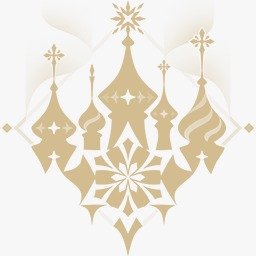
Snezhnaya ( em russo : Снежная Snezhnaya, "Nevosa" ) é uma das sete nações de Teyvat e uma das principais regiões de Genshin Impact. É a nação que venera a Tsaritsa, a Arconte Cryo e Deusa do Amor. Os Fatui, uma força militar sob seu comando, são particularmente notórios por sua devoção inabalável e métodos inescrupulosos para executar sua vontade. A região autônoma de Nod-Krai está localizada na parte mais ao sul de Snezhnaya.
Elemento Associado:Cryo Missão do Arconte:Capítulo VII Ideal:Amor Arconte:Tsaritsa(Anastasya)
Khaenri'ah

Khaenri'ah, também conhecido como Reino de Khaenri'ah ou Dahri, era uma nação subterrânea que não estava sob a jurisdição dos Sete. Foi governada outrora pela Dinastia da Lua Carmesim e, posteriormente, pela Dinastia do Eclipse.
O Reino de Khaenri'ah caiu durante o cataclismo de 500 anos atrás. Nessa época, monstros abissais criados pela alquimista khaenri'ahn Rhinedottir invadiram Teyvat, causando destruição em todas as sete nações. O próprio Khaenri'ah foi destruído pelos Princípios Celestiais e Os Sete como punição pelo uso da Arte de Khemia, bem como da energia abissal que é inerentemente corruptora para Teyvat. Depois disso, todos os khaenri'ahns de sangue puro foram amaldiçoados com a imortalidade por Ronova, enquanto aqueles com ascendência mista ou estrangeira foram transformados em monstros. Alguns khaenri'ahns de sangue puro ainda vagam pelo reino de Teyvat hoje, embora sejam poucos e distantes entre si.